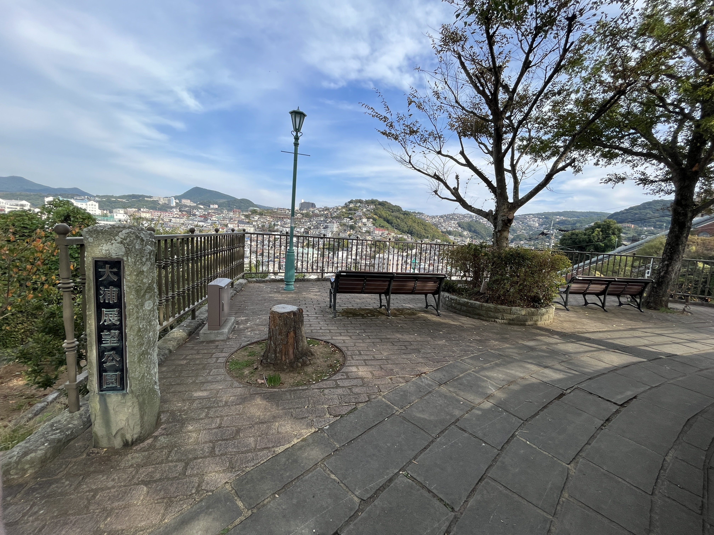
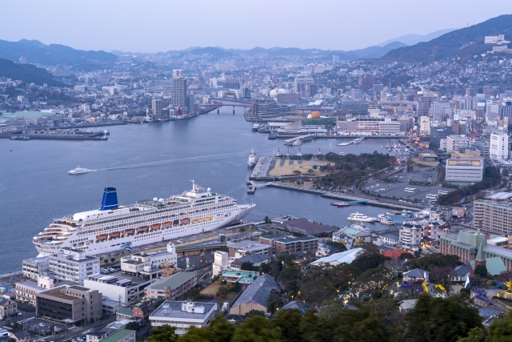
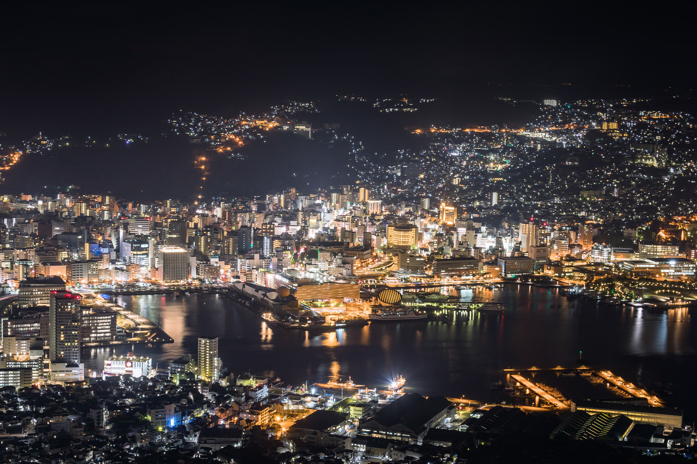

長崎市観光
時間: 9時〜13時
移動開始位置名: 松ヶ枝国際ターミナル
1つ目の場所: グラバー園

特徴: 偉人たちも魅せられた長崎港の絶景を体感！
長崎港を一望できる南山手の丘にある、明治期の洋館群を展示する観光スポットです。世界遺産の構成資産である旧グラバー住宅をはじめ、国指定重要文化財の旧リンガー住宅や旧オルト住宅など、異国情緒あふれる建築物が見どころです。園内には花や緑が豊富で、石畳や石段にも歴史や文化の香りが漂います。
滞在時間:60分
2つ目の場所: 大浦展望公園
特徴: 居留地跡観光のひと休みスポットに最適
長崎港を一望できる場所にあり、東山手の歴史的な洋風住宅や孔子廟を望むことができます。
夜には、長崎市街地の光景が一層美しく映え、訪れる人々に特別な時間を提供しています。
滞在時間:20分
3つ目の場所: 鍋冠山公園
特徴: 稲佐山に匹敵する美しい夜景をバリアフリー展望台から楽しめる人気スポット
標高169mの山で、長崎市街と長崎港を一望できる人気の観光スポットです。2016年にリニューアルされた回廊形式の展望台からは、すり鉢状の地形を見ることができ長崎らしさが感じられます。また、稲佐山に匹敵する美しい夜景をバリアフリー展望台から楽しめます。
滞在時間:40分
4つ目の場所: 稲佐山山頂展望台
特徴: ロープウェイで登れる丘の頂上にある展望台。市街地を見渡せる。
稲佐山公園内の展望台です。標高333メートルの山頂からは、360度のパノラマが楽しめ、市内全景を望むことができます。夜景のビュースポットとしても有名で、天気の良い日には雲仙・天草・五島列島までも遠望できます。
滞在時間:40分
到着:松ヶ枝国際ターミナル